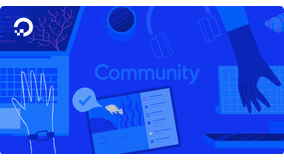
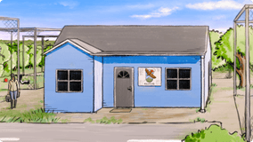
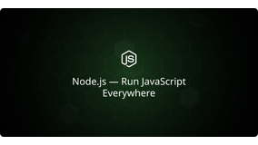
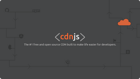
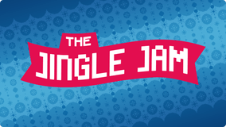
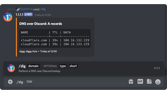
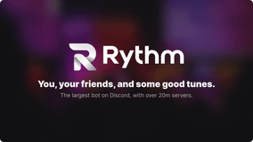

Matt Cowley
What I do:
Open-Source Maintainer @ Alveus Sanctuary 🌎️Web Infrastructure Team @ Node.js 💚️Maintainer of cdnjs.com @ Cloudflare 🛠️️Growth Engineer @ Grafana Labs 📈️
Maintainer of cdnjs.com @ Cloudflare 🛠️️Growth Engineer @ Grafana Labs 📈️
Who I am:
24 y/o based near London, UK 📍️Open-source software engineer ⌨️️Online as @MattIPv4 👀️
Online as @MattIPv4 👀️
What I'm interested in:
Software Engineering, Full-stack Development (TypeScript, Node.js, React, Vue) 🖥️Open-Source Advocacy, Community Management, Developer Relations 🥑️Live Production, Live Broadcasting (Livestreaming, Radio, Theatre) 🎙️Stage Management, Production Electrics, Lighting 💡️
Live Production, Live Broadcasting (Livestreaming, Radio, Theatre) 🎙️Stage Management, Production Electrics, Lighting 💡️
Education:
BSc Computing; 1st Class Honours @ University of Buckingham (2020 - 2021; 2-year course) 🎓️AAB in Computer Science, Maths & Business Studies at A Level (2012 - 2019) 📜️
Location:
Beaconsfield, Buckinghamshire, United Kingdom 📍️Approximately 30 minutes outside central London 🚇️
Get in touch: me@mattcowley.co.uk
Featured Projects and Experience
Collaborating with the Growth product managers and the other engineers on the Growth team to plan, develop, launch, and track experiments to improve the Grafana Cloud onboarding experience. Building new features and messaging to get data flowing for users quicker and demonstrate value to drive paid plan upgrades.
Supporting teams across Grafana in adopting OpenFeature as our new feature flag management system, including writing internal documentation and best practices for using OpenFeature. Submitting improvements and fixes upstream to the open-source OpenFeature projects to solve for novel use cases arising from Grafana's plugin architecture.
Working with the team to overhaul the internal developer experience for Growth-owned code bases. Improving the development process from easier local setup to improved CI in pull requests with ephemeral previews of the changes, consolidating legacy code bases into a single React-based Grafana plugin.
Building an in-house customer cohort system to allow for targeted messaging and experimentation throughout the Grafana Cloud experience, replacing a previous third-party system that was expensive and often blocked by browser extensions.

Led the architecture, development and deployment of a new stack for the marketing (WWW) + community websites, with a static Next.js client for reliability and Node.js microservices for interactivity. Built an in-house CMS for streamlined content management and collaborated with the design team to create a TypeScript UI library for a new design system, aligning code with Figma designs and rolled out across all marketing pages.
Core contributor to Hacktoberfest, leading the engineering and shaping event mechanics/direction. Built a scalable API integrating with GitHub and GitLab to track PRs/MRs each year, processing millions of daily events, and maintained an OpenAPI spec for seamless client-side integration. Managed the Hacktoberfest Discord community of 70k members, and worked with the volunteer moderation team to foster a welcoming and inclusive environment.
Maintained and championed open-source projects like do-markdownit and NGINXConfig, triaging issues, shipping new features and fixes, and reviewing community contributions. Advocating for open-source initiatives and encouraging broader adoption of open-source work within the company.
Part of the new Availability mission, focused on customer uptime. Improved the incident process, reducing resolution times for customer-impacting issues and overhauling the post-incident review process. Collaborated with the support team to refine public communications on the status page during incidents.

Working with the team at Alveus Sanctuary and other volunteer developers, rebuilding the entire website for the non-profit from the ground up, replacing their legacy WordPress-based site that had many performance and maintainability issues with a modern Next.js-based stack.
Creating an open-source organization on GitHub where the code for the site is available for anyone to view and contribute to, as well as providing a centralized place for other open-source projects related to Alveus to live, allowing a community of developers to come together to help the sanctuary.
Supporting the team at Alveus in launching new interactive features to engage with viewers of the Twitch livestreams, such as giveaways and push notifications, allowing them to grow the community, provide more education to the world, and raise more funds to continue operating.

Collaborating with all the open-source maintainers for the Node.js website and related services, including the Node.js website itself as well as the Node.js release worker that hosts Node.js downloads, to improve the reliability of the services and ensure that the community can always access Node.js web resources.
Handling communications on the Node.js status page when issues do arise, ensuring that the community is kept up-to-date with any issues that may be affecting the Node.js website and downloads.

Working with external contributors and the team at Cloudflare to maintain and ensure the reliability of service for cdnjs, the world's largest public CDN. Responding to GitHub issues and pull requests, adding new libraries to the CDN for developers to use, and ensuring existing libraries remain up-to-date.
Developing and maintaining the cdnjs website, cdnjs API, and related tooling (such as the status page and metrics worker).

Developing and maintaining an open-source Discord bot for the Jingle Jam charity event, allowing viewers to easily check the current total raised and other statistics about the event, as well as providing automated update announcements in the Jingle Jam server.
Collaborating with the Yogscast team to provide a similar set of statistics commands for the Twitch livestream chat bot, also maintained as an open-source project.

The 1.1.1.1 DNS over Discord bot allows anyone to perform DNS lookups directly in Discord, via the DNS over HTTPS 1.1.1.1 resolver.
Includes support for performing whois lookups on IP addresses, domain names and ASNs via the web-whois package thanks to the awesome rdap.cloud, whoisjs and cfwho services.
The bot is written in JavaScript, and is open-source on GitHub -- hosted via Cloudflare Workers, responding to user-run commands with Discord's new Interactions (Slash Commands) feature.

Directly responsible for triaging issues and reviewing pull requests made by third-party developers requesting their custom js.org subdomains on the js.org GitHub repository, ensuring they meet our standards for being granted a free subdomain.
Building out automation to handle the annual cleanup of the js.org active file to ensure all subdomains are valid, liaising with contributors on subdomains which have failed checks to resolve any issues.
Working with the js.org team and external contributors to continually improve the PR review process and domain management systems through continuous integration (CI) and automation, removing the need for manual human intervention where possible.

Working with the team at Rythm to deliver a unique website experience for the over 20 million communities using Rythm and exploring the features of the service, utilising Nuxt.js statically exported via a custom CI pipeline and deployed to internal Kubernetes infrastructure for resiliency.
Developing a fully client-side checkout experience for new customers, integrating directly with an in-house payments API as well as with Chargebee and Stripe to provide a seamless flow for the user, allowing them to quickly gain access to paid features of the service online.
Previously, worked with a team of developers to build the original web dashboard for Rythm in PHP (Laravel), integrating with the private API for the bot. Also, developing ancillary support bots for the team, such as support automation and donations integrations, and assisting in providing technical customer support.